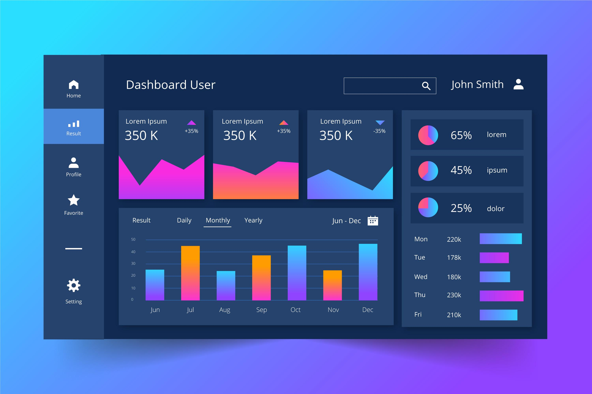

Featured Project: End-to-end data automation and reporting system built with Python.
Solution: Built an automated Python system to process CSV and JSON files and generate structured reports.
Impact: Reduced manual work and improved reporting efficiency through automation.
Tools: Python | Pandas | OOP
